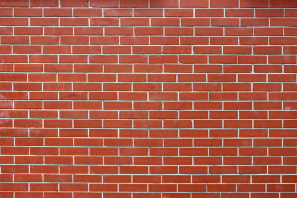
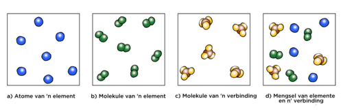

Hierdie hoofstuk stel die leerder bekend aan die fundamentele boustene van materie en die verskillende klassifiseringstelsels wat wetenskaplikes gebruik om oor materie te praat. Een van die groot uitdagings van hierdie inleiding (wat op verskeie vlakke waar is) is dat leerders maklik deur die terminologie verwar raak. 'Atoom' word dikwels met 'molekule' verwar en leerders sukkel ook om die onderskeid tussen element en verbinding te tref. Daarom word hierdie konsepte en hulle verduidelikings gereeld in die hoofstuk herhaal. Ons het ook baie diagramme oor hoe die verskillende klasse van materie sou lyk op atoom/molekulêre skaal ingesluit. Aangesien atome en molekules te klein is om selfs met 'n mikroskoop te sien, gebruik wetenskap opvoeder die byvoeglike naamwoord 'sub-mikroskopies' om na die diagramme te verwys wat entiteite op hierdie skaal demonstreer. Die vermoë om chemiese gebeure op sub-mikroskopiese vlak te kan verbeel, lê kern tot die verstaan van chemie en die
belangrikheid om hierdie vaardigheid te ontwikkel kan nie genoeg beklemtoon word nie.
Dit is net so belangrik dat leerders moet kan interpreteer en sub-mikroskopiese diagramme kan teken. Ons het ook aktiwiteite ingebou waar leerders molekules met kunsklei of speeldeeg moet bou om hulle vaardighede vas te lê. Speeldeeg is maklik en goedkoop om te maak; die resep volg.
Resep vir speeldeeg
BESTANDDELE:
2 koppies meel
2 koppies warm water
1 koppie sout
2 eetlepels kookolie
1 eetlepels kremetart (opsioneel vir verbeterde elastisiteit)
voedselkleursel in verskillende kleure
METODE:
Meng al die bestanddele saam en roer oor lae hitte. Die deeg sal begin dik word totdat dit soos kapokaartapels lyk.
Wanneer die deeg van die kante af wegtrek en in die middel van die pan saamtrek, haal die pan van die hitte af en laat die deeg afkoel totdat jy dit kan hanteer. Let op dat as die deeg nog taai is, jy dit langer moet kook.
Gooi die deeg op 'n skoon oppervlak uit en knie totdat dit glad is. Verdeel die deeg in balle om te kleur.
Maak 'n klein holtetjie in die middel van die bal en gooi 'n klein bietjie voedselkleursel in. Werk die kleur deur die deeg. Jy kan nog kleursel bygooi as jy 'n helderder kleur wil hê.
1.1 Die boustene van materie (1 uur)
Take
Vaardighede
Aanbeveling
Aktiwiteit: Vinnige hersiening van die Periodieke Tabel van Elemente.
Toeganklikheid en herroep van inligting, sortering en klassifisering, skryf
Voorgestel (opsionele hersiening)
1.2 Sub-atomiese deeltjies (1,5 ure)
Take
Vaardighede
Aanbeveling
Aktiwiteit: Maak jou eie model van 'n atoom
Lees, interpreteer, toeganklikheid en herroeping, maak, teken, etiketering, kommunikasie
KABV beveel aan
1.3 Suiwer stowwe (3 ure)
Take
Vaardighede
Aanbeveling
Aktiwiteit: Bestudeer voorstellings van atome en elemente
Toeganklikheid en herroeping van informasie, interpreteer, lees, skryf
Aanbeveel
Aktiwiteit: Atome en molekules
Toeganklikheid en herroeping van informasie, hersiening
Aanbeveel
Aktiwiteit: Skryf en verstaan eenvoudige chemiese formules
Toeganklikheid en herroeping van informasie, interpreteer, rangskik en klassifiseer, lees, skryf, maak, teken, kommunikeer
KABV beveel aan
Aktiwiteit: Stel die ontbinding van water op die skaal van molekules voor
Toeganklikheid en herroeping van inligting, interpretasie, rangskik en klassifiseer, maak, skryf
Opsioneel/uitbreiding
Ondersoek: Die ontbinding van koperchloried
Waarneem, inligting opteken, interpreteer
KABV beveel aan
1.4 Mengsels van elemente en verbindings (0,5 ure)
Take
Vaardighede
Aanbeveling
Aktiwiteit: Onderskei tussen elemente, verbindings en mengsels
Sorteer en klassifiseer
Aanbeveel
Waaruit bestaan materie op sy mees basiese vlak?
Hoe lyk elemente op atomiese vlak?
Hoe verskil die atome van een element van die atome van 'n ander element?
Watter tabel som al die elemente wat die mensdom ken volgens hulle chemiese eienskappe op?
Is atome die kleinste deeltjies waaruit materie bestaan of bestaan atome self uit nog kleiner deeltjies?
Wat weet wetenskaplikes oor die 'binnekant' van die atoom?
Waarom sê ons dat atome 'neutraal' is?
Wanneer is 'n stof 'suiwer'?
Hoe verskil 'n verbinding van 'n element?
Hoe is 'n molekule anders as 'n atoom?
Wat hou molekules bymekaar?
Wat gebeur met atome en molekules tydens 'n chemiese reaksie?
Hoe verskil 'n mengsel van elemente van 'n verbinding?
In hierdie hoofstuk sal ons vrae antwoord oor die basiese boustene van materie, die atoom.
Die boustene van materie
atome
element
wetenskaplike model
veronderstel
Wat is materie? Die tradisionele definisie sê dat materie enigiets is wat massa het en volume opneem (spasie vul).
Ons kan sê dat materie 'goeters' is, maar dit sal nie baie duidelik wees nie. Om materie op 'n wetenskaplike manier te verstaan, moet ons probeer voorstel waarvan dit gemaak is.
Al die verskillende tipes materie wat op die aarde bestaan word saamgestel deur een of meer chemiese elemente. Jy het in Gr. 7 Materiaal en Materie reeds kennis gemaak met van hierdie elemente. Voor jy verder lees, stop eers en kyk hoeveel jy kan onthou van die elemente. Skryf wat jy onthou en sê dit hard-op.
Daar is meer as 100 bekende elemente en wetenskaplikes soek steeds meer. Ons het ook geleer dat elke element 'n unieke naam, chemiese simbool en atoomgetal voorstel en dat dit 'n vaste plek op die Periodieke Tabel van elemente het.
Die titel van hierdie afdeling is 'Die boustene van materie'. Daarom sal ons ons ondersoek begin deur 'n muur voor te stel wat van bakstene gebou is, soos die een in die prentjie. Kan jy sien dat die muur met identiese bakstene gebou is?
'n Baksteenmuur.
Dit is sinoniem met 'n element waar al die atome identies is (hulle is dieselfde soort).
Soortgelyk kan ons aan die meeste vorme van materie dink in terme van die baie, baie klein deeltjies waaruit hulle bestaan. Hierdie klein deeltjies word atome genoem.
Wat is atome?
Die vroeë Griekse filosowe het geglo dat all materie uit ongelooflike klein, maar afsonderlike eenhede (soos bakstene in 'n muur byvoorbeeld) bestaan. Democritus (460-370 BC) was die eerste een wat hierdie eenhede atomos genoem het. Vanuit hierdie frase kom die term atoom wat vandag gebruik word.
Atomos is 'n Griekse frase wat beteken 'nie gesny nie' of 'dit wat ondeelbaar is'.
Democritus het die term atomos 2000 jaar gelede vir die eerste keer gebruik om die kleinste deeltjie waaruit materie bestaan te beskryf.
Dit het baie lank geneem (meer as 2000 jare!) vir Democritus se idees om deur wetenskaplikes aanvaar te word. Waarom dink jy het dit so lank gevat? Bespreek dit met jou klas.
Vra jou leerders om dit vir 'n paar minute in die klas te bespreek. Jy kan die gesprek lei deur die volgende vrae:
Glo jy in vampiere? (Feëtjies, zombies, die Paashaas, Thokoloshe ens.)
Dink jy hulle bestaan regtig?
Hoe weet ons of iets regtig bestaan? (Wanneer ons onbetwisbare bewyse het vir die bestaan daarvan.)
Dink jy dis moontlik dat wetenskaplikes nie in die bestaan van atome geglo het nie omdat hulle nie onbetwisbare bewyse vir die bestaan daarvan kon vind nie?
Waarom dink jy kon wetenskaplikes nie bewyse vir die bestaan van atome kry nie?
Kan dit wees omdat atome so ongelooflik klein is dat mens dit nie met die naakte oog kan sien nie?
Atome is so klein dat dit tot onlangs onmoontlik was om hulle te sien, selfs al het mens 'n sterk mikroskoop. Vandag is daar allerhande mikroskope wat aan gesofistikeerde rekenaars verbind is wat dit moontlik maak vir wetenskaplikes om atome te 'sien'.
Vind meer uit oor hierdie mikroskope wat mense toelaat om atome te 'sien' bit.ly/14AbIai
Kan jy jou voorstel hoe moeilik dit moes wees om die vroeë wetenskaplikes te oortuig dat materie uit baie, baie klein deeltjies bestaan wat niemand nog ooit gesien het nie?
Atome is so klein dat 'n glas water meer atome bevat as wat daar glase water in die Atlantiese Oseaan is.
Hoe klein is atome regtig? Wel, omtrent 5 000 000 000 000 000 000 van hulle kan in die punt aan die einde van hierdie sin pas. Verskillende atome het natuurlik verskillende groottes; dit is daarom net 'n geraamde getal. Wag...atome het verskillende groottes? Hoe werk dit? Ons gaan in die volgende afdeling uitvind.
Die wêreld se kleinste fliek wat van atome gemaak is bit.ly/178tzB3 en hoe wetenskaplikes dit gemaak het bit.ly/13m5p3T
Wat is elemente?
Democritus se idees oor materie is geïgnoreer en vir meer as 2000 jaar vergeet totdat 'n Engelsman met die naam John Dalton hulle weer aan die wetenskaplike wêreld bekend gestel het in 1803. Dalton het vyf stellings oor atome gemaak wat vandag nog steeds geredelik as die waarheid aanvaar word. Drie van die stellings, of veronderstellings soos hulle meer algemeen bekend is, sê hoe om elemente te verstaan. Ons sal later na die ander twee veronderstellings kyk. Hier is wat Dalton ons oor elemente geleer het:
Elke element bestaan uit klein, ondeelbare deeltjies wat atome genoem word.
Alle atome van 'n gegewe element is identies.
Atome van verskillende elemente het verskillende massas.
Dit sluit aan by wat ons in Gr. 7 Materie en Materiale geleer het. Kom ons hersien wat ons reeds weet:
Die Periodieke Tabel van elemente was oorspronklik gemaak om die patrone wat in die chemiese eienskappe van elemente waargeneem is voor te stel.
Elke element het 'n vaste plek op die Periodieke Tabel.
Die elemente word in volgorde van toenemende atoomgetalle rangskik.
Die enigste letter wat nie op die Periodieke Tabel verskyn nie is 'J'.
Die elemente word in volgorde van toenemende atoomgetalle rangskik.
Daar is 'n groter weergawe van die Periodieke Tabel aan die binnekant van jou boek se omslag vir maklike verwysing.
'n Vinnige hersiening van die Periodieke Tabel van Elemente
Dit sal help om die konsepte wat in Gr.7 geleer is oor die Periodieke Tabel te hersien.
VRAE:
Verduidelik in jou eie woorde wat jy dink die Periodieke Tabel is.
Dit is 'n ope vraag vir leerders om te sien wat hulle op die stadium verstaan oor die Periodieke Tabel. Hulle mag hul verduidelikings as volg skryf:
Die Periodieke Tabel lys al die elemente op die aarde waarvan ons weet .
Die Periodieke Tabel klassifiseer al die elemente op die aarde.
Die Periodieke Tabel gee ons inligting oor die elemente, soos hulle name, simbole en atoomgetalle.
Ons kan patrone in terme van chemiese en fisiese eienskappe in die Periodieke Tabel sien.
Waar kry ons metale en nie-metale op die Periodieke Tabel?
Metale word aan die linkerkant en nie-metale aan die regterkant van die tabel.
Wat noem ons die derde klas van elemente waarvan ons geleer het en waar kan ons hulle kry.
Hierdie is semi-metale en hulle kan tussen die metale en nie-metale in 'n ongelyke lyn aangetref word.
Gee die simbole van twee voorbeelde van metale en twee voorbeelde van nie-metale.
Enige van die metale aan die linkerkant van die tabel soos Li, Na, K, C, Mg ens. en enige van die nie-metale aan die regterkant soos C, N, O, Cl, I, He, S ens.
Voltooi die volgende sin: Die elemente word rangskik in volgorde van toenemende _____.
atoomgetal
Wat is die atoomgetal van waterstof en wat is die atoomgetal van koolstof?
Waterstof is 1 en Koolstof is 6.
Voltooi die volgende tabel deur die naam of die simbool vir die elemente wat gelys is in te vul en sê of dit 'n metaal, nie-metaal of semi-metaal is.
Naam
Simbool
Metaal of nie-metaal?
Waterstof
Li
Na
Koolstof
Si
Magnesium
O
Cl
Kalium
Boor
Cu
Naam
Simbool
Metaal of nie-metaal?
Waterstof
H
Nie-metaal
Litium
Li
Metaal
Natrium
Na
Metaal
Koolstof
C
Nie-metaal
Silikon
Si
Semi-metaal
Magnesium
Mg
Metaal
Suurstof
O
Nie-metaal
Chloor
Cl
Nie-metaal
Kalium
K
Metaal
Boor
B
Semi-metaal
Koper
Cu
Metaal
Is atome regtig die kleinste deeltjies? Dalton het so gedink! Hy het ook veronderstel dat:
4. Atome kan nie deur chemiese reaksies geskep of vernietig word nie.
Dalton was reg toe hy gesê het dat atome nie deur chemiese reaksies geskep of vernietig kan word nie. Beteken dit dat atome die kleinste deeltjies van materie is? Nie heeltemal nie. Wetenskaplikes het sedertdien ontdek dat atome self uit selfs kleiner deeltjies bestaan. Ons noem hierdie deeltjies sub-atomiese deeltjies.
Ons sal binnekort leer oor sub-atomiese deeltjies, maar voor ons dit doen moet ons eers vinnig praat oor wetenskaplike modelle. Weet jy wat 'n modelkar is?
Ons het genoem dat atome nie deur chemiese reaksies vernietig kan word nie. Dit verwys na die behoud van massa tydens 'n chemiese reaksie. Atome kan egter uitmekaar gebreek of in kleiner dele verdeel word as daar genoeg kinetiese energie is, soos byvoorbeeld in die geval van die atoombom. Alhoewel die naam 'atoom' van die Griekse woord wat 'ondeelbaar' beteken afgelei is, is hulle nie regtig ondeelbaar nie.
Wetenskaplikes gebruik modelle om hulle te help om die regte wêreld te verstaan en te verstaan hoe dit werk.
Wetenskaplike modelle
Het jy al 'n geografiese aardbol gesien? Die aardbol in die volgende prentjie is 'n model van die aarde. Waarvoor dink jy kan ons dit gebruik? Dink jy ons kan meer van 'n aardbol leer as van 'n kaart van die aarde?
Laat leerders dit in die klas bespreek. Lei hulle na die volgende idees:
Vra hulle om na die kaart van die aarde te kyk en uit te werk wat presies aan die ander kant van Suid-Afrika op die aarde is. As dit moontlik was om 'n tonnel deur die middel van die aarde te maak, waar sou die tonnel uitkom? Dit is baie moeilik om dit met 'n kaart te bepaal, maar met die aardbol kan ons maklik sien wat aan die ander kant van die aarde regoor Suid-Afrika is.
'n Aardbol van die wêreld.'n Kaart van die wêreld
Aardbolle is die beste voorstellings van ons planeet omdat hulle drie-dimensioneel is. Kan jy aan 'n paar goed dink wat 'n aardbol ons oor die aarde kan leer?
Hier is 'n paar dinge om die leerders te help:
'n Aardbol wys vir ons ,baie meer realisties as 'n kaart, die posisies van die kontinente relatief tot mekaar.
'n Aardbol is meer akkuraat as 'n plat kaart in terme van die relatiewe grootte van lande.
'n Aardbol kan ons ook oor die beweging van die aarde leer; hoe dit om sy eie as draai om dag en nag te skep.
'n Aardbol kan ook wys hoe die aarde om die son beweeg om seisoene te skep.
Ons kan ook oor lengte- en breedtegrade leer.
Soms kan 'n model 'n idee of 'n stel idees wees; 'n vereenvoudigde voorstelling van moeilike konsepte of fenomene. 'n Wetenskaplike model is 'n stel idees wat 'n storie vertel oor die wêreld om ons, net soos die aardbol ons oor die aarde vertel het.
'n Model van die atoom
Atome kan nie met die blote oog gesien word nie; ons het baie sterk mikroskope nodig. Wetenskaplikes het egter 'n goeie idee oor hoe hulle in verskillende situasies sal reageer. Hulle het hierdie idees gebruik om 'n model te ontwikkel van hoe 'n atoom lyk om ons te help om atome beter te verstaan.
Die moderne model van die atoom leer ons dat atome uit verskillende sub-atomiese deeltjies bestaan. Sub-atomies beteken 'kleiner as die atoom'. In die volgende afdeling gaan ons meer oor hierdie interessante klein deeltjies leer.
Die 'Build an atom'-skakel neem jou na 'n webtuiste wat 'n verteenwoordigende beeld van die atoom teken. Dit begin by waterstof, die eerste element op die Periodieke Tabel, en laat jou toe om deur te klik na al die elemente of aan te beweeg na 'n spesifieke element. Jy kan dit vir jou leerders wys as 'n inleiding tot die volgende afdeling oor sub-atomiese deeltjies en dan kan jy later terugkom wanneer jy die afdeling afgehandel het om die nuwe inligting te versterk.
Sub-atomiese deeltjies
atoomkern
sub-atomiese deeltjie
elektrone
neutrone
protone
Na baie dekades van atome bestudeer, het wetenskaplikes gevind dat alle atome uit drie soorte sub-atomiese deeltjies bestaan. Ons noem hulle:
Die volgende prentjie van die atoom wys hoe hulle almal saam pas.
Neutrone, protone en elektrone is sub-atomiese deeltjies waarui atome bestaan.
Hierdie drie sub-atomiese deeltjies vorm die basis van ons moderne begrip van hoe atome aan die binnekant lyk. Kom ons kyk wat weet ons van elkeen van die deeltjies.
Die afdeling van fisika wat sub-atomiese deeltjies ondersoek word deeltjiefisika genoem. Weet jy wat die naam is van die deeltjie wat tydens 2012 ontdek is? Dit was 'n reuse wetenskaplike ontdekking vir die fisika!
In reaksie op die 'Het jy geweet'-boksie is die Higgs boson of Higgs deeltjie in 2012 ontdek. Dit was 'n reuse wetenskaplike ontdekking. Die Higgs boson is 'n fundamentele deeltjie wat help om aan ander deeltjies massa gee. Die bestaan van die deeltjie is vir die eerste keer in 1964 voorgehou deur 'n groep van 6 fisikuste, een waarvan Peter Higgs was. Wetenskaplikes het vir 50 jaar vir bewyse vir die bestaan van die deeltjie gesoek en het uiteindelik in Julie 2012 met die hulp van die Groot Hadron Versneller by CERN 'n deeltjie identifiseer wat hulle vermoed het die Higgs boson was. Dit is sedertdien bevestig. Hier is twee webblaaie waarna jy kan gaan kyk as jy of jou klas meer hieroor wil weet: bit.ly/163XeMI en bit.ly/142RCzg.
Protone
Die protone is diep binne-in die atoom in 'n sone wat die kern genoem word. Die protone is glo almal positief gelaai. Wat beteken dit?
Om dit te antwoord moet jy aan die volgende fenomeen wat wetenskaplikes ontdek het dink:
Wanneer twee protone naby mekaar kom, stoot hulle mekaar weg.
Wanneer 'n elektron naby 'n proton kom, trek hulle mekaar aan.
Twee elektrone sal ook mekaar wegstoot.
Wat veroorsaak dit? Daar moet een of ander eienskap van elektrone en protone wees wat veroorsaak dat hierdie kragte toegepas word. Wetenskaplikes gebruik die woord 'lading' om hierdie eienskap van deeltjies voor te stel. Ons neem waar dat:
gelyke ladings stoot af (wat beteken dat dieselfde ladings weg van mekaar stoot)
teenoorgestelde ladings trek aan
Met verwysing na die "let wel": dit is belangrik om op te let dat die elemente rangskik is in volgorde van toenemende atoomgetal en NIE die toenemende atoommassa-getal nie (selfs al kan die algemene neiging waargeneem word). Leerders mag aflei dat met elke addisionele proton elemente laer af op die Periodieke tabel swaarder is as die wat hoër op links os. Atoomgetal en atoommassa-getal (nie op hulle Periodieke Tabelle nie) word eers in Gr. 10 regtig behandel en dit is dus moeilik om nou die verskil te verduidelik. Jy kan uitsonderings uitwys wat hulle veronderstellings teenstaan soos byvoorbeeld Argon - Kalium, Kobalt - Nikkel, Tellerium - Jodium.
Neutrone
Neutrone is deeltjies wat nie positief of negatief gelaai is nie. Hulle is neutraal. Die neutrone en die protone vorm 'n stewig verpakte kern in die middel van die atoom.
Die kern is baie dig. Dit beteken dat die protone en neutrone styf gepak is en baie swaar vir hul grootte is. As die kern op skaal vergroot word tot die grootte van 'n punt, sal dit soveel soos 'n volgelaaide minibus, of 2,5 ton, weeg.
Elektrone
Elektrone is die kleinste van die drie sub-atomiese deeltjies. Elektrone is omtrent 2000 maal kleiner as protone en neutrone. Elektrone beweeg in 'n sone rondom die atoomkern teen 'n vreeslike hoë spoed en vorm 'n elektronwolk wat baie groter as die kern is. Kyk weer na die skets wat die model van die atoom wys om dit te sien.
As ons die grootte van die kern kon vergroot tot die grootte van die punt aan die einde van die sin, sou die buite rante van die elektronwolk wat dit omring tussen 3 en 5 meter weg wees.
Hierdie drie sub-atomiese deeltjies help ons om te verstaan hoe atome aan die binnekant lyk.
Maak jou eie model van 'n atoom
Jy kan baie verskillende materiale vir hierdie aktiwiteit gebruik soos balle van speeldeeg balle, krale, gedroogte lensies of ertjies, pastaskulpe ens. Gee vir elke leerder 'n ander element sodat hulle met verskillende hoeveelhede protone, neutrone en elektrone werk. Hulle moet een kleur of tipe voorwerp kies om elkeen van die drie sub-atomiese deeltjies uit te beeld. Hulle moet dieselfde hoeveelheid sub-atomiese deeltjies wys aangesien hulle met neutrale atome (d.i. die getal elektrone is gelyk aan die getal protone) en nie met isotope, wat verskillende hoeveelhede neutrone het, werk.
Onthou jy Dalton se 3 veronderstellings van die begin van die hoofstuk? Hulle is:
Elke element bestaan uit klein, ondeelbare deeltjies wat atome genoem word.
Alle atome van 'n gegewe element is identies.
Atome van verskillende elemente het verskillende massas.
Dus het elke element op die Periodieke Tabel sy eie tipe atoom. Die atome van verskillende elemente is verskillend aangesien hulle verskillende hoeveelhede protone het. Onthou jy dat ons gesê het dat die atoomgetal van 'n element die hoeveelheid protone in 'n atoom van daardie element is?
Hoeveel atome het ons dus nodig as ons 'n model van 'n stikstofatoom wil maak?
7 protone
Hoeveel protone het ons nodig as ons 'n swaelatoom wil maak?
16 protone
In meeste atome van 'n element is die getal neutrone in die kern dieselfde as die getal protone. Die getal elektrone kan verander, maar vir nou gaan ons slegs modelle van neutrale atome maak. Daar moet dus dieselfde hoeveelheid elektrone as protone wees.
Leerders moet aangemoedig word om die grootte van die deeltjies in ag te neem. Daarom moet die voorwerpe wat die protone en neutrone voorstel van soortgelyke groottes wees en die voorwerpe vir die elektrone moet kleiner wees.
Hier is 'n paar foto's om jou te help om leerders te lei om hul eie modelle te bou. Hierdie is byvoorbeeld 'n booratoom aangesien daar 3 protone is.
Begin met 'n leë papierbord.Sit die protone en neutrone in die middel.Sit die elektrone in die omliggende spasie.Sit byskrifte by.
MATERIALE:
gom
papierbord
speeldeeg, krale, droë lensies of ertjies, ens.
INSTRUKSIES:
Na jy die inligting oor atome gelees het, sal jou onderwyser vir jou 'n element gee waarvan jy 'n model moet bou. Wat is die naam van jou element?
Leerderafhanklike antwoord.
Wat is die atoomgetal van jou element?
Leerderafhanklike antwoord.
Hoeveel protone het jy nodig om jou atoom te maak?
Leerderafhanklike antwoord. Dit moet dieselfde wees as die atoomgetal.
Besluit nou watter voorwerpe jy wil gebruik om jou sub-atomiese deeltjies in jou model voor te stel.
Plak dit op die papierbord en voorsien byskrifte.
Leerders moet die element wat hulle doen benoem en byskrifte voorsien vir die elektrone, protone, neutrone en die kern.
Na jy jou model gebou het, teken 'n model van jou atoom hieronder. Verskaf byskrifte. Hierdie is beide modelle van jou atoom!
Hier is algemene inligting oor hoe om die simulasies in die klaskamer te gebruik: .bit.ly/14nA5RI. Hierdie pdf het meer spesifiek inligting vir die onderwyser oor die 'Build an atom'-simulasie bit.ly/142dSct
Kan jy onthou dat jy in Gr. 7 van mengsels geleer het? Jy onthou dalk dat 'n mengsel uit twee of meer stowwe wat gemeng is bestaan. Die volgende afdeling is NIE oor mengsels nie. Dit is oor stowwe wat nie meng met enige iets nie en wat deurgaans uit slegs een tipe materie bestaan. Sulke stowwe word suiwer stowwe genoem. In so 'n geval beteken 'suiwer' slegs: nie gemeng met enige ander stowwe nie.
Die 'Just how small is an atom?'-video is 'n oulike animasie wat probeer om die grootte van 'n atoom en sy sub-atomiese deeltjies in perspektief te stel deur dit met voorwerpe uit die regte lewe, soos vrugte, huise en motors, te vergelyk. Die video beweeg vinnig van een onderwerp na 'n volgende en gebruik baie metafore en kan dus moontlik te verwarrend en abstrak wees. Jy mag dit dalk eers self moet kyk en dan besluit of dit vir jou leerders sal werk of nie.
Suiwer stowwe
suiwer stof
verbinding
chemiese verbinding
molekule
chemiese formule
chemiese reaksie
ontbindingsreaksie
Belangrike nota: In die vorige afdeling het ons gekleurde sirkels/krale/balle/boontjies ens. gebruik om die verskillende sub-atomiese deeltjies voor te stel en te wys hoe hulle in atome rangskik is. In hierdie afdeling, en in die laaste hoofstuk oor chemiese reaksies, gaan ons egter gekleurde sirkels/krale/balle/boontjies gebruik om hele atome voor te stel en die verskillende kleure en groottes sal verskillende atome in verbindings en elemente voorstel. Dit is belangrik dat leerders besef op watter skaal hulle werk wanneer julle verskillende diagramme op die bord teken of oor die diagramme in die werkboek praat.
In hierdie diagramme verteenwoordig die verskillende gekleurde sirkels verskillende atome.
Daar is net twee klasse van suiwer stowwe, naamlik elemente en verbindings. Kyk na die twee diagramme hieronder om die verskil tussen die twee te verstaan.
'n Element bestaan uit atome wat almal dieselfde soort is.'n Verbinding bestaan uit twee of meer tipes atome in 'n vaste verhouding.
Die diagram aan die linkerkant verteenwoordig 'n element. Kan jy sien dat al die atome dieselfde soort is? 'n Element is 'n materiaal wat uit atome van net een soort bestaan.
Kyk nou na die diagram aan die regterkant wat 'n verbinding voorstel. Hierdie diagram wys twee belangrike dinge oor verbindings:
Die verbinding bestaan uit atome, maar daar is meer as een soort.
Die verskillende atome verbind in klein trossies en die trossies is almal dieselfde.
'n Verbinding is 'n materiaal wat bestaan uit twee of meer soorte atome wat chemies aan mekaar verbind is.
Ons gaan nou afsonderlik na elkeen van hierdie klasse kyk en 'n paar voorbeelde van elkeen bespreek.
Elemente
Ons het pas geleer dat 'n element uit dieselfde soorte atome bestaan. Dit beteken dat as ons 'n stuk van die metaal koper het, dit heeltemal uit koperatome bestaan. Netso sal 'n stuk silwer net uit silweratome bestaan. Koper en silwer lyk anders en het ander eienskappe omdat hulle uit verskillende atome gemaak is. Kyk na die volgende tabel wat die sub-mikroskopiese beeld van die atome voorstel. Daar is ook 'n stuk juweliersware van elke soort metaal.
Koper
Silwer
Sub-mikroskopiese struktuur van koper
Die element koper (Cu) bestaan uit slegs koperatome.
Sub-mikroskopiese strukture van silwer
Die element silwer (Ag) bestaan slegs uit silweratome.
Waarom is die silweratome groter as die koperatome in die vorige diagram? Wenk: Vind die twee elemente op die Periodieke Tabel en vergelyk hulle posisies.
Silwer lê onder koper op die Periodieke Tabel wat beteken dat die atome van silwer groter as die van koper is.
Dink jy die stof wat in die volgende diagram voorgestel word is 'n element? Om jou te help om die vraag te antwoord, werk deur die vrae onder die diagram.
Skryf eers neer wat jy in die prent sien.
Leerders mag sê dat hulle pare atome sien wat aanmekaar vassit.
Is die trosse styf verpak of ver van mekaar af?
Hulle is redelik ver weg.
Wat beteken dit? Dink jy die stof is 'n vastestof, vloeistof of gas?
Dis stof is 'n gas.
Dink jy dat dit 'n mengsel van stowwe of 'n suiwer stof is? Waarom dink jy so?
Dit is 'n suiwer stof omdat al die molekules dieselfde lyk.
Is die atome van dieselfde soort?
Ja, hulle is.
Watter klas stowwe word uit net een soort atoom gemaak?
Die elemente.
Is die stof 'n element? Hoekom?
Die stof is 'n element omdat dit van net een soort atoom gemaak is.
Nota: Dit stel eintlik die diatomiese elemente soos suurstof (O2), stikstof (N2), waterstof(H2) voor wat as diatomiese (twee atome) molekules by kamertemperatuur bestaan.
Kan elemente uit molekules bestaan?
Ja, hulle kan.
Dit is nie belangrik dat leerders dit antwoord nie; dit is slegs genoem om die idee in te lei dat beide elemente EN verbindings as molekules kan bestaan, maar dat die molekules van elemente fundamenteel anders as die molekules van verbindings is.
Die trosse atome in die vorige voorbeeld word molekules genoem. Molekule is 'n baie belangrike woord in chemie. 'n Molekule is twee of meer atome wat chemies aan mekaar verbind is.
Die atome in 'n molekule kan van dieselfde soort wees (dit sal dan 'n molekule van 'n element wees), of dit kan van verskillende soorte wees (dit sal dan 'n molekule van 'n verbinding wees).
Nie alle elemente het molekules nie. Die metale aan die linkerkant en in die middel van die Periodieke Tabel is vastestowwe by kamertemperatuur en bestaan dus as styf saamgepakte rangskikkings van atome soos in die vorige voorbeeld van silwer en koper.
Baie van die nie-metale aan die regterkant van die Periodieke Tabel is gasse by kamertemperatuur wat bestaan as molekules wat elk uit twee atome bestaan. Hierdie word diatomiese molekules genoem. Die prentjie van die element wat ons vroeër bespreek het, wys hoe 'n diatomiese molekule lyk. Suurstof (O2), stikstof(N2), waterstof(H2), chloor (Cl2) en sommige ander elemente van die nie-metale vorm almal diatomies molekules.
Teken 'n prent van een van hierdie diatomiese molekules in die spasie hieronder.
Leerders moet twee sirkels trek wat dieselfde grootte en kleur het en aanmekaar vas is. Ons stel voor dat leerders van die diatomiese molekules met krale, speeldeeg, ens maak. Maak seker dat hulle weet dat die krale nou die hele atoom en nie die sub-atomiese deeltjies voorstel.
Diatomies verwys na 'n molekule wat uit twee van dieselfde atome wat verbind is bestaan , soos in suurstof (O2). 'Di' beteken twee. Triatomies verwys na 'n molekule wat uit drie van dieselfde atome wat verbind is bestaan, soos osoon (O3).
Atome en molekules
Hierdie is 'n vinnige hersiening van wat leerders sopas oor atome en molekules geleer het en oor hoe om tussen die twee te onderskei.
Kom ons maak seker dat ons die verskil tussen atome en molekules verstaan.
VRAE:
Kyk na die volgende diagramme. Besluit of elkeen 'n atoom of 'n molekule voorstel. As dit 'n molekule is, sê uit hoeveel atome die molekule bestaan.
Diagram
Atoom of molekule?
Diagram
Atoom of molekule?
'n Atoom
'n Molekule van 2 atome
'n Molekule van 4 atome
'n Atoom
'n Molekule van 9 atome
Kyk na die volgende komplekse molekule.
Uit hoeveel atome bestaan hierdie molekule?
24 atome.
Uit hoeveel verskillende soorte atome bestaan hierdie molekule?
3 verskillende soorte atome.
Wat hou die atome in die molekule bymekaar?
Daar is chemiese verbindings tussen die atome.
Kom ons oorweeg nou die volgende: as 'n verbinding uit twee of meer soorte atome bestaan, sal dit beteken dat verbindings uit twee of meer verskillende elemente wat verbind is bestaan.
Verbindings
Vra leerders om hulle eie molekules met krale of speeldeeg op hulle lessenaars te maak terwyl jy deur hierdie inhoud gaan.
Daar is ten minste 118 elemente in ons bekende wêreld. Hulle kan verbindings vorm deur in miljoene verskillende kombinasies te verbind - heeltemal te veel om hier te bespreek. Ons gaan net na 'n paar van die eenvoudiger kombinasies kyk om die idee te illustreer.
Aangesien water 'n belangrike verbinding is vir organismes wat op die aarde bly, gaan ons dit as ons eerste voorbeeld gebruik. Wetenskaplikes weet dat 'n watermolekule uit een suurstof- en twee waterstofatome bestaan. As ons hulle kon sien sou alle watermolekules 'n bietjie soos hierdie diagram van 'n watermolekule gelyk het.
'n Voorstelling van 'n watermolekule.
Die "International Union of Pure and Applied Chemistry (IUPAC) se naam vir water is dihidrogene monoksied.
Alle watermolekules is presies dieselfde. Ons sê dat atome in 'n vaste verhouding verbind het: twee waterstofatome vir elke een suurstofatoom. Die atome in die molekules word deur spesiale kragte bymekaar gehou wat ons 'n 'chemiese verbinding' noem.
Hierdie verbindings word kovalente verbindings genoem, maar leerders hoef dit nie nou al te weet nie. Jy kan jou leerders op hierdie stadium herinner dat die diagramme van die molekules slegs voorstellings is en dat ons verskillende kleure gebruik om te onderskei tussen atome van verskillende elemente. Suurstofatome is nie regtig rooi nie.
Chemiese formules
Onthou jy dat ons gesê het dat elke element sy eie unieke chemiese simbool het? Ons kan hierdie simbole kombineer in 'n chemiese formule vir water. Die chemiese formule is nog 'n baie belangrike konsep in chemie.
Die chemiese formule vir water is H2O. Dit wys die verhouding van waterstofatome (twee) tot suurstofatome (een) in een molekule van water. Wat dink jy sal die chemiese formule CO2 vir ons sê?
Dit sê vir ons dat een koolstof(C)atoom verbind is met twee suurstof(O)atome in CO2. Op hierdie stadium stel ons voor dat jy 'n paar chemiese formules op die bord skryf sodat leerders vir jou kan verduidelik wat elkeen beteken. Vra jou leerders om notas te maak in die kantlyn van hulle werkboeke terwyl jy die werk bespreek. Dit sal as 'n inleiding dien vir die volgende aktiwiteit. Jy kan byvoorbeeld skryf:
H2 vir waterstofgas, wat beteken dat daar twee waterstofatome verbind is. Dit is 'n diatomiese molekule.
NaCl vir natriumchloried (tafelsout) wat beteken dat daar een natriumatoom verbind het met een chloriedatoom.
KMnO4 is kaliumpermanganaat. Dit is effe moeiliker, maar beklemtoon die feit dat 'n molekule uit meer as twee verskillende elemente kan bestaan. Hier is een kalium, een mangaan, een stikstof en vier suurstofatome aan mekaar verbind om een molekule te vorm.
In die volgende aktiwiteit oefen ons om chemiese formules te skryf en te verstaan. Dit is altyd 'n goeie idee om op baie verskillende maniere aan 'n nuwe konsep te dink. Ons gaan daarom ook modelle bou van die molekules waarvoor ons die formules skryf.
Skryf en verstaan eenvoudige chemiese formules
MATERIALE:
speeldeeg of kunsklei van verskillende kleure
INSTRUKSIES:
In die volgende kolom is die name van sommige suiwer stowwe in die linkerkantste kolom geskryf. Vul al die leë blokkies in die tabel in.
Bou 'n model van een molekule van elkeen van die verbindings in die tabel. Jou atome moet omtrent so groot soos 'n ertjie wees. Dit mag dalk help om eers 'n skets van die molekule in die regterkantste kolom te maak voor jy die model bou. Wys jou onderwyser as jy klaar is.
Hier is 'n paar riglyne om jou te help om dit te doen:
Elke ry in die tabel het genoeg inligting sodat jy die leë blokkies kan invul.
Die eerste ry is as voorbeeld vir jou ingevul:
Kolom 1 bevat die naam: water
Kolom 2 bevat die formule: H2O
Kolom 3: Die formule van water (in kolom 2) bevat al die inligting wat ons nodig het om die blokkie 'Waaruit bestaan dit' in te vul. Wanneer ons die formule H2O lees, sê die onderskrif '2' vir ons dat daar twee H-atome is. Aangesien O nie 'n onderskrif het nie, beteken dit daar is net een O-atoom.
Kolom 4: Die model van 'n watermolekule moet reflekteer dat daar een O-atoom en twee H-atome is. Hoe weet ons dat O in die middel moet wees? Op die oomblik is dit genoeg om te weet dat die atoom waaran ons die minste het, gewoonlik in die middel is.
Op hierdie stadium is dit nie belangrik dat leerders die presiese hoeke tussen die atome, soos die hoeke tussen die waterstofatome in die watermolekule, regkry nie aangesien hulle eers in Gr.10-12 leer wat dit beïnvloed
Naam van stof
Chemiese formule
Waaruit bestaan dit?
Hoe sal 'n molekule van die verbinding lyk (as jy dit kon sien)?
Water
H2O
Twee H-atome en een O-atoom
Koolstofdioksied
CO2
Swaeldioksied
Waterstofsulfied
H2S
Ammoniak
Een N-atoom en drie H-atome
Suurstofgas
Twee O-atome
Stikstofgas
N2
Chloorgas
Waterstofgas
Twee H-atome
Die voltooide tabel moet as volg lyk.
Naam van stof
Chemiese formule
Waaruit bestaan dit?
Hoe sal 'n molekule van die verbinding lyk (as jy dit kon sien)?
Water
H2O
Twee H-atome en een O-atoom
Koolstofdioksied
CO2
Twee O-atome en een C-atoom
Swaeldioksied
SO2
Twee O-atome en een S-atoom
Waterstofsulfied
H2S
Twee H-atome en een S-atoom
Ammoniak
NH3
Een N-atoom en drie H-atome
Suurstofgas
O2
Twee O-atome
Stikstofgas
N2
Twee N-atome
Chloorgas
Cl2
Twee Cl-atome
Waterstofgas
H2
Twee H-atome
VRAE:
Lys al die stowwe in die tabel wat elemente is. Skryf hulle name en formules neer.
Waterstof, H2
Suurstof, O2
Chloor, Cl2
Stikstof, N2
Lys al die stowwe in die tabel wat verbindings is. Skryf hulle name en formules neer.
Water, H2O
Koolstofdioksied, CO2
Swaeldioksied, SO2
Natriumchloried, NaCl
Swaelsulfied, H2S
Ammoniak, NH3
Hoe het jy geweet watter van die stowwe in die tabel verbindings en nie elemente was nie?
Jy het seker gekyk na watter van hulle uit meer as een soort atoom bestaan. 'n Verbinding is 'n materiaal wat uit atome van twee of meer verskillende elemente bestaan. Die elemente is nie net fisies gemeng nie, maar is chemies aanmekaar op atomiese vlak verbind.
Water (H2O), koolstofdioksied (CO2) en sout of natriumchloried (NaCl) is voorbeelde van verbindings, terwyl suurstofgas (O2), waterstofgas (H2) en stikstofgas (N2) voorbeelde van elemente is.
Die verbinding met die formule H2O2 bestaan ook uit waterstof- en stuurstofatome. Die formule sê vir ons dat een molekule van hierdie stof uit twee atome waterstof en twee atome suurstof bestaan. Is H2O2 dieselfde as water? Wat dink jy?
Moenie H2O2 met H2O verwar nie! H2O2 is 'n verbinding wat waterstofperoksied genoem word. Waterstofperoksied is soortgelyk aan water in sover dit 'n helder, kleurlose vloeistof by kamertemperatuur (25°C) is, alhoewel dit nie so loperig is nie, maar dit is op soveel maniere anders. Die volgende eienskappe van waterstofperoksied mag jou oortuig dat dit nie dieselfde as water is nie.
Waterstofperoksied se kookpunt is 150°C en dit is 'n baie effektiewe bleikmiddel vir klere en hare.
Gekonsentreerde waterstofperoksied is so reaktief dat dit as 'n komponent van vuurpylbrandstof gebruik word.
Waterstofperoksied is baie korroderend.
Ons kan water drink, maar waterstofperoksied is baie gevaarlik en skadelik.
Korroderende stowwe is stowwe wat skade aan metaal en ander materiale deur 'n chemiese proses aanrig. Dink aan reënwater wat roes veroorsaak wat metaal wegvreet.
As dit jou nie oortuig nie, kom ons vergelyk hoe 'n waterstofperoksiedmolekule langs water lyk.
Waterstofperoksied.Water.
Alhoewel hulle uit presies dieselfde elemente bestaan, is die twee verbindings baie verskillend en moet hulle nooit verwar word nie.
Die doel van die vergelyking van water en waterstofperoksied was om jou te wys dat die atome in 'n gegewe verbinding altyd in 'n vaste verhouding gekombineer is. In alle watermolekules in die heelal sal daar altyd een O-atoom en twee H-atome saamgebind wees.
Dit was die vyfde van Dalton se veronderstellings:
5. Atome word chemies verbind in vaste verhoudings om verbindings te vorm.
Hoe 'verbind' atome? Wat laat hulle aanmekaar vassit om molekules te vorm?
Chemiese verbindings
Kyk na die foto van die verskillende rangskikkings van metaalballe. Hierdie balle is magneties en dit laat jou toe om verskillende patrone te maak deur hulle aanmekaar te laat vassit. Wat laat magnete aanmekaar vassit?
Leerders mag sê dat magnete aanmekaar vassit omdat hulle mekaar aantrek. Wys vir hulle dat magnete wel mekaar aantrek as hulle reg opstel is. Magnete kan mekaar ook afstoot as hulle anders opgestel is. Ons sal meer na magnetiese kragte kyk in Gr. 9 Energie en Verandering.
Magnete trek mekaar aan (of stoot af) aangesien daar 'n magnetiese krag tussen hulle is (jy sal in Gr. 9 meer oor magnete leer). Wanneer atome verbind, doen hulle dit aangesien hulle ook 'n aantrekkingskrag ervaar. Die krag is effe meer ingewikkeld as die aantrekkingskrag tussen magnete, maar dit werk op dieselfde manier: Die krag hou atome bymekaar asof hulle met gom vasgeplak is. Die kragte wat atome bymekaar hou word chemiese verbindings genoem.
In die watermolekule is daar chemiese verbindings tussen O en twee H-atome wat die molekule bymekaar hou. Hoeveel chemiese verbindings is in elke watermolekule? Kyk na die diagram hieronder as jy onseker is:
Twee verbindings. As jy jou leerders op hierdie stadium bietjie wil uitdaag bo die verwagtinge van die kurrikulum, kan jy vir hulle 'n vinnige verduideliking van elektrondeling gee. Die besonderhede daarvan gaan eers in Gr.10 behandel word. Hierdie sterk chemiese verbindings, wat kovalente verbindings genoem word, word gevorm wanneer atome elektrone deel. Dit verduidelik waarom atome dadelik na 'n ontbindingsreaksie verander in iets anders: die elektrondelingvereiste wat die oorspronklike verbinding gevorm het, is steeds daar, hulle deel net elektrone met 'n ander atoom.
Die watermolekule het twee identiese O-H verbindings. Wat sou gebeur as ons genoeg energie gehad het om daardie verbindings te breek?
As ons genoeg energie het om die O-H verbinding te breek sal ons die atome van mekaar kan skei.
Wat sal ons kry as ons die watermolekules in hulle atome skei? Teoreties sal ons waterstof- en stuurstofatome hê. Wat eintlik gebeur is dat die waterstofatome onmiddellik verbind om H2 te vorm en die suurstofatome verbind onmiddellik om O2 te vorm.
Wanneer atome van mekaar geskei word en herverbind in verskillende samestellings van atome, sê ons 'n chemiese reaksie het plaasgevind.
In die bogenoemde chemiese reaksie het die water ontbind (opgebreek) en herverbind in kleiner molekules. Ons sê dat die water in die bogenoemde voorbeeld 'n ontbindingsreaksie ondergaan het. Natuurlik is nie alle chemiese reaskies ontbindingsreaksies nie. Daar is baie verskillende soorte chemiese reaksies en ons gaan in die volgende afdeling 'n paar voorbeelde ondersoek.
Chemiese reaksies
Twee belangrike gebeure vind plaas in alle chemiese reaksies:
chemiese verbindings breek
nuwe chemiese verbindings vorm
Dit beteken dat in alle chemiese reaksies die atome in die molekules hulleself herrangskik om nuwe molekules te vorm.
In die volgende akiwiteit gaan ons die ontbindingsreaksie van water simuleer deur balle van klei of speeldeeg te gebruik om die verskillende atome voor te stel.
Stel die ontbinding van water op die skaal van molekules voor
Dit is 'n opsionele uitbreiding. Leerders sal later in die kwartaal meer na chemiese reaksies kyk.
MATERIALE:
speeldeeg of modelklei in twee verskillende kleure
INSTRUKSIES:
Bou twee watermolekules van die klei of speeldeeg. Kyk na die vorige prent om jou te herinner hoe 'n watermolekule lyk. Jy kan enige kleur klei gebruik om joune te bou.
Breek nou al die verbindings wat die molekules bymekaar hou en verdeel hulle in individuele atome.
Antwoord die volgende vrae:
Hoeveel waterstof(H)atome het jy?
Vier H-atome.
Hoeveel suurstof(O)atome het jy?
Twee O-atome.
Verbind die waterstof- en suurstofatome in waterstofmolekules (H2) en suurstofmolekules (O2).
Antwoord die volgende vrae:
Hoeveel waterstofmolekules kon jy uit die H-atome bou?
Twee waterstofmolekules (H2) kon van die vier H-atome gemaak word.
Hoeveel suurstofmolekule kon jy van die O-atome bou?
Een suurstofmolekule (O2)kan van die twee O-atome gemaak word.
Kan jy 'n chemiese vergelyking vir die reaksie wat jy sopas met die kleimodel gebou het skryf? Kyk na die diagram vir inspirasie:
2 H2O \(\rightarrow\) 2 H2 + O2
Chemiese vergelykings sal volledig in die laaste hoofstuk van Gr. 8 Materie en Materiaal bekend gestel word, maar dit is dalk nou 'n goeie plek om leerders te begin bewus maak hiervoor. Jy kan verduidelik dat as daar net een molekule van 'n seker soort is (die O2 in die bogenoemde voorbeeld) ons nie die getal voor dit in die chemiese reaksie skryf nie. Balansering van vergelykings is nie op die stadium 'n vereiste nie.
Kom ons kyk na nog 'n voorbeeld van 'n chemiese reaksie: die reaksie as koolstof (in steenkool) met suurstof (in die lug) reageer om koolstofdioksied te vorm:
Jy kan die balle van speeldeeg gebruik om die reaksie te simuleer.
Probeer 'n chemiese vergelyking skryf vir die reaksie as koolstof en suurstof verbind om koolstofdioksied te vorm. (Wenk: Gebruik die diagram om jou te lei.)
C + O2 \(\rightarrow\) CO2
Hoe herrangskik die atome in die steenkool en suurstof om koolstofdioksied te vorm? Watter verbinding breek?
Die verbinding tussen die twee suurstofatome breek.
Watter nuwe verbindings vorm?
Twee nuwe koolstof-suurstof verbindings vorm wanneer koolstofdioksied vorm.
Jou onderwyser gaan nou vir jou twee chemiese reaksies in die klas demonstreer. Jou taak is om versigtig te kyk wat gebeur en jou waarnemings, wat jy kan sien gebeur, neer te skryf.
Die ontbinding van koperchloried
Ons beveel aan dat dit as 'n demonstrasie gedoen word. Atlernatiewelik kan 'n paar eksperimente in die klas opgestel word wat verskillende groepe leerders kan waarneem. Die video in die besoekboksie bevat 'n eenvoudige demonstrasie van die elektrolise van kopersulfaat in plaas van koperchloried. Die waarnemings sal egter dieselfde wees, naamlik dat die kopermetale om die katode saampak en jy gasborrels by die anode kan waarneem (in die video is dit suurstofgas en nie chloriedgas soos in die ondersoek hier in die werkboek nie.
'n Video wat 'n soortgelyke reaksie met kopersulfaat wys.bit.ly/11OztaB
DOEL: Om te bepaal of dit moontlik is om koperchloried te onbind deur elektriese energie.
MATERIALE EN APPARAAT:
beker
kartonskyf wat groot genoeg is om die bokant van die beker te bedek
twee grafietelektrodes
2 stukke draad
koperchloriedoplossings
9 volt batterye
In plaas van grafietelektrodes kan jy ook koolstofelektrodes van gebruikte batteryeselle gebruik.
Lengtes draad met krokodilklemme aan beide kante is ideaal. Jy het dit nodig om 'n elektriese stroombaan te bou. 'n Skakelaar is opsioneel.
Koperchloriedoplossings kan gemaak word deur twee teelepels koper(II)chloried in 'n koppie kraanwater op te los.
Maak die volgende waarnemings voor jy begin:
Watter kleur is die koperchloriedoplossing?
Blou.
Watter kleur is die grafietelektrodes?
Donker grys of swart.
METODE:
Gooi die koperchloriedoplossing in die beker.
Maak twee klein gaatjies in die kartonskyf en stoot die elektrodes deur die gaatjies soos in die volgende diagram gewys word.
Sit die skyf oor die beker sodat die grootste deel van die elektrode onder die oppervlak van die oplossing is.
Gebruik die draad om die bokante van die elektrodes met die battery te verbind. Kyk na die diagram van die eksperiment se opstelling.
Laat die reaksie vir 'n paar minute aangaan en neem waar wat gebeur.
Wanneer die reaksie omtrent 10 minute geloop het kan die drade losgemaak word en die opstelling uitmekaar gehaal word.
Die demonstrasie wat jou onderwyser opgestel het mag soos volg lyk.
WAARNEMINGS:
Wat neem jy waar op die oppervlak van die twee elektrodes na die reaksies vir 'n paar minute verloop het?
Die een elektrode is oortrek met klein borreltjies en die ander een is besig om bruin te word.
Watter kleur was die koperchloried aan die einde van die eksperiment?
Die oplossing is steeds blou.
As jy van die oorspronklike oplossing oorgehou het, kan leerders die oplossing voor en na die eksperiment vergelyk. Hulle mag oplet dat die 'na'-oplossing nie so blou soos die 'voor'-oplossing is nie. Laat jou leerders bespiegel oor hoekom dit mag wees. Dit is as gevolg van twee redes:
die koperione het uit die oplossing beweeg toe hulle elektrone bygekry het en soliede koper geword wat 'n rooi-bruin neerslag op die katode vorm. (Leerders hoef nog nie van ioon- of elektrondeling te weet nie en hulle mag dalk raai dat die koperatome/deeltjies uit die oplossing beweeg het en op die elektrode aangepak het.)
chloriedione vorm chloorgas, Cl2 by die anode. (Leerders kan waarneem dat gasborrels by die ander elektrode vorm en moontlik aflei dat dit die chloried is wat uit die oplossing as chloriedgas kom.)
Daarom word die konsentrasie van die koperchloriedoplossing swakker, wat veroorsaak dat dit effe minder blou word.
Hoe het die voorkoms van die grafietelektrodes verander?
Een elektrode is nog donker grys of swart. Die ander elektrode is bedek met 'n rooi-bruin laag.
Jy kan uitwys dat die elektrode wat grys-swart gebly het die een was waar daar vroeër borrels was. Laat van die leerders aan die elektrode ruik. Hulle mag dalk die 'bleikmiddel' kan ruik, dit is die reuk van die chloorgas, Cl2, wat vorm. Vra jou leerders om die kleur van die laag op die elektrode te vergelyk met die van 'n kopermuntstuk. Kan die neerslag op die tweede elektrode koper wees? Ja, dit is.
Leerders hoef nie te verstaan dat wat in die oplossing gebeur op ioonvlak gebeur nie. Die klem is hier om te demonstreer dat 'n verbinding in elemente opgebreek kan word. 'n Verduideliking van die elektrolise van koper(II)chloriedoplossing word egter hier gegee as agtergrond en as jy wil uitbrei op jou leerders se kennis:
Wanneer elektrodes aan die kragtoevoer verbind word, beweeg elektrone en veroorsaak dat die elektrode wat aan die positiewe kant van die battery verbind is, positief word. Dit word die anode genoem. Die negatiefgelaaide chloriedione in oplossing word aangetrek deur die positiewe anode. Die chloriedione gee hul elektrone op en vorm chloriedgas wat as borrels waargeneem word.
Die elektrode is verbind aan die negatiewe kant van die battery en word negatief. Dit word die katode genoem. By die katode word die positiefgelaaide koperione in oplossing aangetrek tot die negatiewe elektrode. By die katode kry die koperione elektrone by en vorm kopermetaal wat neerslaan op die katode. Dit is die bruin bedekking wat waargeneem kan word.
(Jy kan jou leerders kry om die positiewe en negatiewe tekens te teken en die elektrodes op die diagram in hulle werkboeke aan te dui as 'n uitbreiding.)
Die elektrode wat aan die positiewe kant van die battery is, is die positiewe elektrode en word die anode genoem. Die elektrode wat aan die negatiewe kant van die battery is, is die negatiewe elektrode en word die katode genoem.
Som jou eksperimentele waarnemings in die volgende tabel op.
Die koperchloriedoplossing
Elektrode 1 (die anode)
Elektrode 2 (die katode)
Voor die eksperiment
Na die eksperiment
Die koperchloriedoplossing
Elektrode 1 (die anode)
Elektrode 2 (die katode)
Voor die eksperiment
Die oplossing het 'n intense blou kleur.
Donker grys oppervlak.
Donker grys oppervlak.
Na die eksperiment
Die oplossing is nog steeds blou, maar die kleur was minder intens.
Donker grys oppervlak, maar met 'n effense reuk van bleikmiddel. Tydens die reaksie word borrels waargeneem.
Rooi-bruin bedekking op die oppervlak.
ANALISE EN BESPREKING:
Wat gee die koperchloriedoplossing sy intense blou kleur?
Die koperchloried wat daarin opgelos is.
Dink jy dat van die koperchloried in iets anders verander het tydens die reaksie? Verduidelik hoekom jy so dink.
Die koperchloriedoplossing het minder blou geword. Dit sê vir ons dat van die koperchloried in iets anders verander het.
Hoe verduidelik jy die borrels op die oppervlak van die eerste elektrode? Het jy enige idee wat dit was? Wenk: waarna het die elektrode geruik na die tyd?
Borrels beteken dat 'n gas op die oppervlak van die elektrode gevorm het. Dit ruik na bleikmiddel. Chloriedgas ruik ook na bleikmiddel dus is dit moontlik dat die gas wat by die elektrode gevorm het chloriedgas mag wees.
Nota: Chloried is eintlik die aktiewe bestandeel in bleikmiddels.
Weet jy wat die rooi-bruin bedekking op die tweede elektrode is? Wenk: Watter metaal het dieselfde kenmerkende rooi-bruin kleur?
Dit is moontlik dat die rooi-bruin kleur koper is.
Hoe weet ons dat 'n chemiese reaksie plaasgevind het?
Die atome in koperchloried was herrangskik om verskillende materiale te vorm: koper (Cu) en chloried (Cl2).
GEVOLGTREKKING:
Skryf 'n gevolgtrekking vir die ondersoek. In jou gevolgtrekking moet jy die doel van die ondersoek oorskryf as 'n stelling oor die bevindinge van jou ondersoek.
Leerders se gevolgtrekkings moet ten minste twee van die volgende bevat:
Dit is moontlik om die koperchloriedoplossing te ontbind deur elektriese energie.
Die verbinding koperchloried sal ontbind in kopermetaal (Cu) en chloriedgas (Cl2).
Beide nuwe materiale is elemente.
Dink jy dit sou moontlik wees om die koperchloried deur fisiese skeidingsmetodes, soos filtrering, verdamping, distillasie, chromotografie of deur te sif, waarvan ons in Gr. 7 Materie en Materiale geleer het in koper en chloried op te breek? Hier is 'n wenk: Nie een van hierdie metodes kan die verbinding tussen atome in 'n stof verbreek nie.
Die antwoord is nee. Koper en chloried is chemies verbind in koperchloried. Ons weet dit as gevolg van die chemiese formule daarvoor: CuCl2. Fisiese skeidingsmetodes kan net gebruik word om mengsels op te breek in die stowwe waarvan hulle gemaak is.
Ons het tot dusver van atome, molekules, elemente en verbindings geleer. Hierdie is soms verwarrende konsepte omdat hulle dinge beskryf wat te klein is om te sien en soms moeilik is om te verbeel. In die volgende afdeling gaan ons terugkeer na die idee van mengsels en kyk hoe alles wat ons tot dusver geleer het in 'n skematiese voorstelling geplaas kan word vir 'n klassifikasie van materie en materiale.
Mengsels van elemente en verbindings
mengsel
onderskeid
In Gr. 7 Materie en Materiaal het ons geleer dat 'n mengsel 'n kombinasie van twee of meer materiale is. In hierdie hoofstuk gaan ons leer oor suiwer stowwe. Suiwer stowwe bestaan altyd ten volle uit een soort materie. Die materie kan 'n element of 'n verbinding wees en ons het geleer hoe om tussen hulle te onderskei deur na die verskillende soorte atome waaruit hulle bestaan te kyk:
elemente bestaan uit net een soort atoom, en
verbindings bestaan uit meer as een soort atoom, maar altyd in 'n vaste verhouding.
Alle materiale kan as of suiwer stowwe (met ander woorde net een stof regdeur), of 'n mengsel van stowwe klassifiseer word. Kom ons kyk na 'n paar diagramme om ons te help om hierdie onderskeid beter te verstaan.
Diagramme om die verskil tussen elemente, verbindings en mengsels te wys.
Die twee diagramme aan die linkerkant (a en b) som als wat ons weet oor elemente op, naamlik dat 'n element uit atome of molekules kan bestaan, maar dat die atome in 'n sekere element altyd van net een soort is.
Watter spesiale naam gee ons aan molekules van elemente wat uit twee atome wat verbind is bestaan?
Diatomiese molekules
Diagram (c) wys dat die molekules van 'n verbinding uit twee of meer verskillende soorte atome bestaan, maar in 'n gegewe verbinding sal hulle altyd in dieselfde vaste verhouding verbind. Dink aan die voorbeeld van water (H2O) en waterstofperoksied (H2O2) waarna ons vroeër gekyk het.
Diagram (d) wys hoe elemente en verbindings verskil van mengsels. Elemente en verbindings is beide suiwer stowwe (hulle het dieselfde soort deeltjies regdeur) terwyl mengsels altyd meer as een soort deeltjie het.
Ons kry mengsels van elemente en verbindings op baie plekke in die natuurlike wêreld, soos in die lug, seewater, rotse en lewende organismes.
In die volgende aktiwiteit gaan ons probeer om die beginsel om te onderskei tussen verskillende moontlikhede toe te pas.
Onderskei tussen elemente, verbindings en mengsels
INSTRUKSIES:
Elkeen van die 15 blokke bevat 'n diagram wat atome en molekules van materie voorstel.
Jy moet die materie in elke blokkie klassifiseer deur slegs die letters A tot E te gebruik om die kategorieë te identifiseer:
A = element
B = verbinding
C = mengsel van elemente
D = mengsel van verbindings
E = mengsel van elemente en verbindings
Die klassifikasies is as volg:
B
C
E
D
A
B
A
E
C
E
B
D
D
D
D
Jy mag dalk vind dat die volgende vloeidiagram jou sal help om te verstaan hoe al hierdie konsepte bymekaar kom.
Die vloeidiagram bring al die klasse van materie waaroor ons in die hoofstuk geleer het bymekaar. Dit sit hulle in dieselfde skema sodat ons kan sien hoe die verskillende klasse met mekaar verband hou.
Opsomming
Atome
Alle materie bestaan uit klein deeltjies wat atome genoem word.
Die atome van elke element is uniek en eintlik identies aan mekaar.
Alle bekende elemente is op die Periodieke Tabel gelys.
Sub-atomiese deeltjies
Die drie hoof sub-atomiese deeltjies wat die struktuur van die atoom bepaal is protone, neutrone en elektrone.
Protone is positief gelaai en word in die kern, diep binne die middel van die atoom, gevind.
Neutrone is soortgelyk aan protone in grootte en massa, maar hulle het geen lading nie (hulle is neutraal). Hulle word ook in die atoomkern gevind.
Elektrone is negatiefgelaaide deeltjies wat baie kleiner as protone en neutrone is. 'n Wolk van vinnigbewegende elektrone omring die atoomkern.
In 'n neutrale atoom is die getal protone altyd gelyk aan die getal elektrone, daarom is die atoom neutraal.
Suiwer stowwe
Alle materie kan as mengsels van stowwe of suiwer stowwe geklassifiseer word.
Suiwer stowwe kan verder as elemente of verbindings geklassifiseer word.
Elemente
Al die atome in 'n element is van dieselfde soort. Dit beteken dat 'n element nie in 'n ander element verander kan word deur enige fisiese of chemiese proses nie.
Elemente kan opgebou word uit individuele atome of as verbinde pare atome wat diatomiese molekules genoem word.
Wanneer elemente verbind word verbindings gevorm.
Verbindings
In 'n verbinding word atome van twee of meer verskillende soorte chemies in 'n vaste verhouding verbind.
Die atome waaruit 'n molekule bestaan word bymekaar gehou deur spesiale aantrekkingskragte wat chemiese verbindings genoem word.
Verbindings kan gevorm en ontbind word deur chemiese reaksies.
'n Chemiese reaksie waarin 'n verbinding ontbind in eenvoudiger verbindings en selfs elemente, word 'n ontbindingsreaksie genoem.
Verbindings kan nie deur fisiese prosesse geskei word nie, maar hulle kan in hulle elemente (of eenvoudiger verbindings) geskei word deur chemiese prosesse.
Mengsels
Mengsels is kombinasies van twee of meer elemente en/of verbindings.
Die komponente in 'n mengsel kan deur fisiese skeidingsmetodes, soos filtrasie, verdamping, distillasie, chromotografie en deur te sif, geskei word.
Konsepkaart
Die konsepkaart som alles op oor atome, elemente, verbindings en mengsels wat ons in die hoofstuk geleer het. Jy moet die konsepkaart voltooi deur die naam van die tabel wat al die elemente lys, en die name van die drie sub-atomiese deeltjies in te vul. Jy moet na die konsepte kyk wat na die tyd kom om te bepaal watter sub-atomiese deeltjie in watter spasie geskryf moet word.
Onderwyser se weergawe
Hersieningsvrae
Noem die drie subatomiese deeltjies waaruit atome bestaan. [3 punte]
Protone, neutrone en elektrone
Teken 'n skets van die atoom. Jou skets moet al drie verskillende soorte sub-atomiese deeltjies wys. [4 punte]
Leerders se diagramme moet die protone en neutrone wys in 'n tros in die middel van die atoom en kan afsonderlik (protone; neutrone) en gesamentlik (kern) aangedui word. Die elektrone moet aangedui word, hulle moet buite die kern wees en deur 'n 'elektronwolk' voorgestel word wat in vergelyking met die kern groot moet wees. Die atoom moet nie 'n definitiewe grens hê nie. Op hierdie stadium het ons nog net na neutrale atome (en nie ione) gekyk dus moet die hoeveelheid elektrone gelyk wees aan die hoeveelheid protone.
Lees eers die volgende stellings en antwoord dan die vrae wat volg:
Sommige elemente bestaan uit molekules.
Alle verbindings bestaan uit molekules.
Bestaan alle elemente uit molekules? Verduidelik jou antwoord kortliks. [2 punte]
Slegs SOMMIGE elemente bestaan uit molekules. Die wat nie uit molekules bestaan nie, bestaan uit atome.
Gee voorbeelde van drie elemente wat as molekules bestaan. Skryf hulle name en formules neer en teken een molekule van elk. [3 x 3 punte elk = 9 punte]
Suurstof, O2
Waterstof, H2
Stikstof, N2
Ander voorbeelde is Cl2, I2, Br2, en F2. Die kleure is nie belangrik nie, maar die identiese atome wel, dus die twee N-atome in N2 moet dieselfde kleur wees.
Kan jy aan ten minste drie voorbeelde dink van elemente wat NIE uit molekules bestaan nie? Skryf hulle name en formules neer. [6 punte]
Silwer, Ag; Goud, Au; Yster, Fe
Nota: Al die elemente op die Periodieke Tabel, met die uitsondering van die wat jy in jou antwoord vir vraag 3b gegee het, val in die kategorie. S en P vorm streng gesproke ook molekules (S8 en P4), maar dit is nie op die vlak eksamineerbaar nie.
Gee voorbeelde van drie verbindings. Skryf hulle name en formules neer en teken een molekule van elk. [3 x 3 punte elk = 9 punte]
Water, H2O
Koolstofdioksied, CO2
Ammoniak, NH3
Nota: Enige aanvaarbare voorbeelde word toegelaat, maar die voorbeelde waarmee leerders geneig is om op te kom sal die uit die hoofstuk wees. Weereens is die kleure nie belangrik nie, maar identiese atome soos die twee O-atome in CO2 moet dieselfde kleur hê.
Hoe verskil die molekules van 'n element van die van 'n verbinding? Jy mag tekeninge in jou verduideliking gebruik. [4 punte]
Die molekukles van 'n element bestaan uit een soort atoom soos byvoorbeeld die molekules van N2. N2 molekules bestaan slegs uit stikstof(N)atome.
Enige aanvaarbare voorbeeld is toelaatbaar.
Die molekules van 'n verbinding, bestaan egter uit twee of meer verskillende atome soos byvoorbeeld CO2. CO2 bestaan uit koolstof(C)- en suurstof(O)atome.
Elkeen van die nege blokke hieronder (gemerk A tot I) bevat materie. Jy moet die volgende vrae beantwoord deur die diagramme in die blokke te gebruik. Elke vraag kan meer as een antwoord hê! [7 punte]
Watter blok verteenwoordig die deeltjies van 'n element?
A, D en I.
Watter blok verteenwoordig die deeltjies van 'n verbinding?
C
Watter blok verteenwoordig die deeltjies van 'n mengsel?
B, E, F, G en H.
Watter blok verteenwoordig die deeltjies van 'n suiwer stof?
A, D, D en I.
Watter blok verteenwoordig diatomiese molekules van 'n element?
I
Wat is die verskil tussen 'n mengsel en 'n verbinding in terme van hoe ons hulle kan skei? [2 punte]
Mengsels kan op fisiese maniere (soos filtrering, distillasie, deur te sif ens.) geskei word, terwyl verbindings op chemiese wyse in 'n chemiese reaksie (soos elektrolise) geskei moet word.


{kind=link}